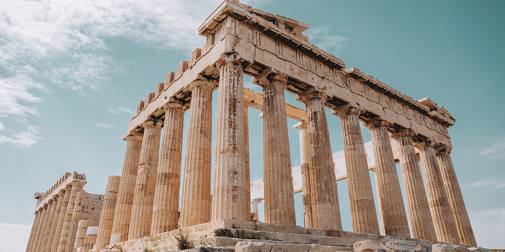

Hypothèse future
Un court texte spéculatif décrivant une possible transformation de l'œuvre.
Chaque œuvre contient 3 temporalités — passé / présent / futur. Cliquez pour naviguer globalement ou par œuvre.
Un court texte spéculatif décrivant une possible transformation de l'œuvre.
Remplacer par une vidéo d'archive (utilisez data-src pour lazy-load).

Bruitages, composition sonore projetée.
"Extrait d'un journal ancien — fragment retrouvé."
Performance audio en cours — remplacez par un player audio.

Vous êtes artiste, habitant·e, étudiant·e ou simple curieux·se ?
Votre voix a sa place dans Palimpseste Urbain. Chaque contribution devient une strate de la ville.
Institutions culturelles, galeries, collectifs, mécènes : vos partenariats permettront de donner vie et visibilité à cette archive vivante.
Nous contacter